Conjure o Primeiro Feitiço!
Desperte poderes arcanos, suba de nível e derrote seus rivais em Caster, um eletrizante jogo de cartas. A coleção chega em breve ao Kickstarter.
Garanta Acesso VIP GratuitoDesperte poderes arcanos, suba de nível e derrote seus rivais em Caster, um eletrizante jogo de cartas. A coleção chega em breve ao Kickstarter.
Garanta Acesso VIP Gratuito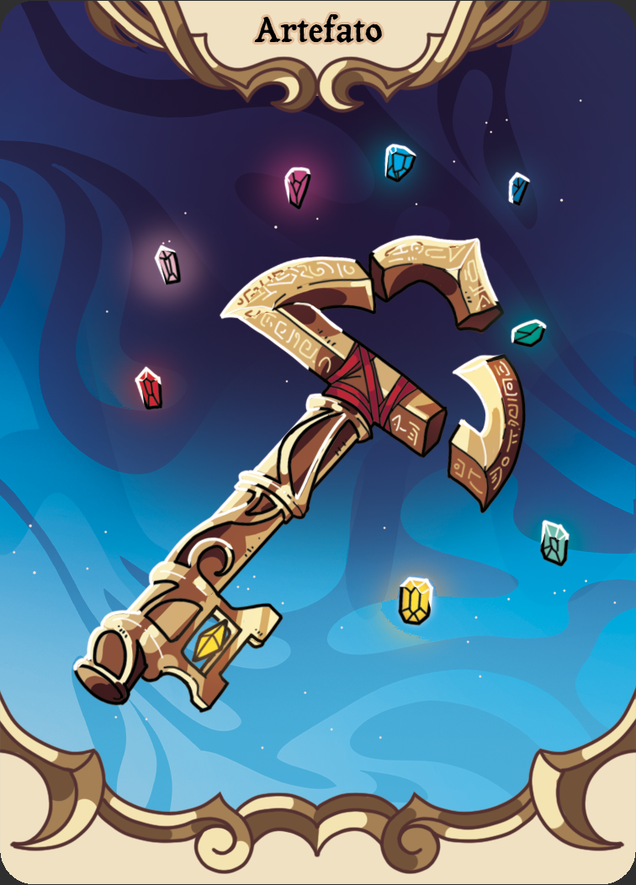
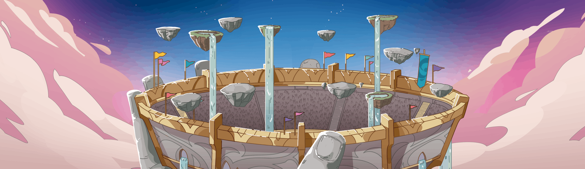
O Arcanium é o palco da lendária disputa pela Taça dos Casters. Escolha um dos sete Casters para lutar por esse cobiçado prêmio e domine forças ancestrais para provar o seu poder. Conquiste a vitória ao canalizar com destreza suas formas favoritas de magia ou deixe que o conhecimento guie seu caminho, desbloqueando estrategicamente novas habilidades e feitiços para superar seus oponentes. Não importa a sua abordagem, uma coisa é certa… apenas um poderá conquistar a Taça dos Casters!
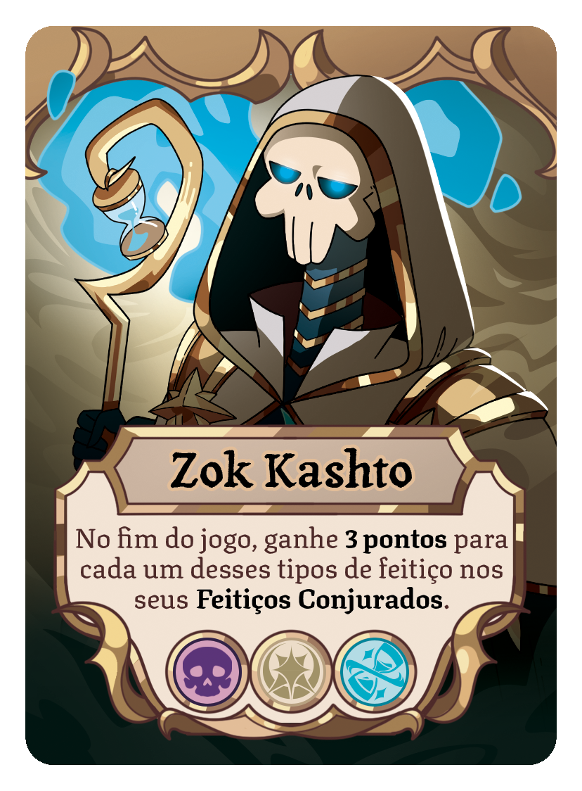
Sacerdote Imortal
Outrora um sacerdote reverenciado, Zok Kashto foi condenado a uma eternidade de servidão no túmulo de seu Faraó. Milênios se passaram, e sua ânsia por magia só cresceu. Ao amaldiçoar um saqueador de tumbas, encontrou a chance de renascer. Agora, ergue-se no Arcanium, pronto para lutar.
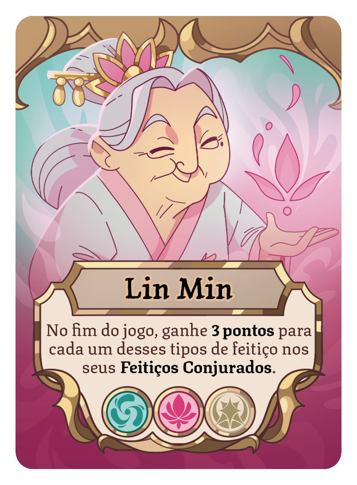
Guardiã Sagrada
Após uma longa e pacífica vida protegendo os encantamentos em sua floresta ancestral, Lin Min ressurge para vingar um artefato roubado e restaurar a magia de sua família na arena. Mas será que conquistar a Taça dos Casters será suficiente para devolver o equilíbrio à sua terra natal?
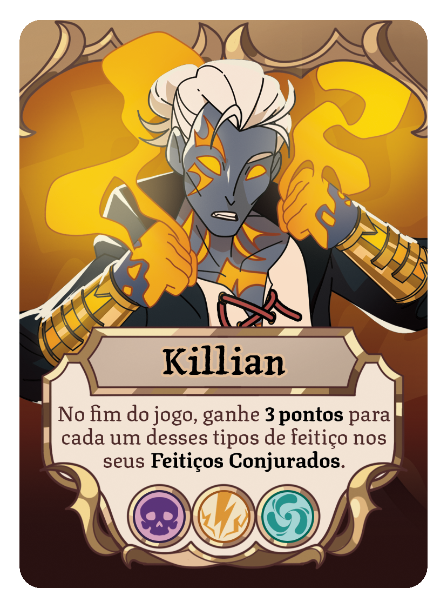
Renascido Acorrentado
Uma força formidável habita dentro de Killian. Anos de solidão e disciplina o ensinaram a controlar essa energia, selando-a em um emaranhado de tatuagens incandescentes que se movem sobre seu corpo. Mas com sua mana agora enfraquecendo, ele recorre à arena em busca de um novo poder.
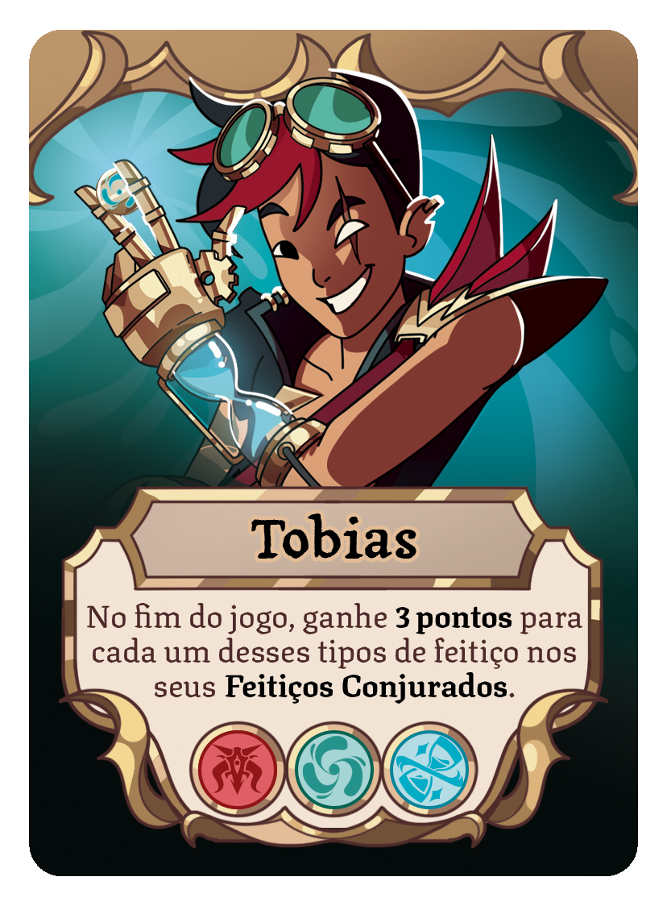
Ladrão do Tempo
Movido por uma curiosidade insaciável e uma sede de poder, o inventor Tobias acabou sob o domínio de um mestre demoníaco. Agora, ele deve atravessar eras em busca de artefatos mágicos para seu senhor, até encontrar uma fonte de magia forte o bastante para romper suas correntes e libertar-se de sua servidão.
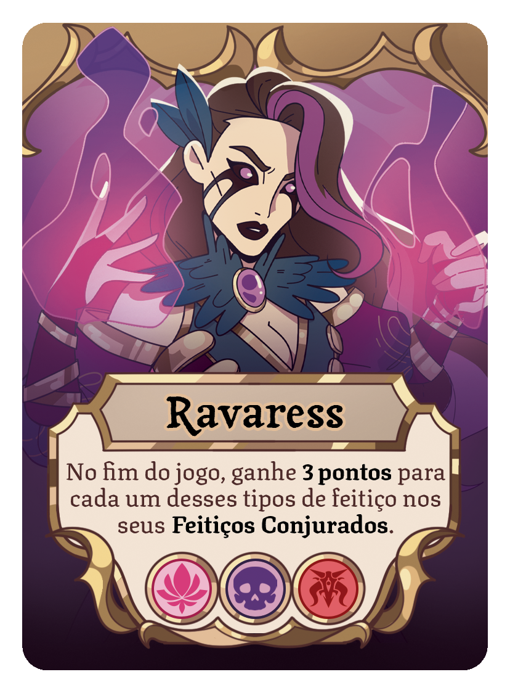
Necromante Insana
Órfã de uma expedição de caça que deu errado, a jovem Ravaress encontrou consolo nas vozes dos mortos. Com o tempo, os sussurros vindos do além aguçaram seu poder, e a concederam o domínio sobre os mortos-vivos e acesso a uma magia temida e proibida.
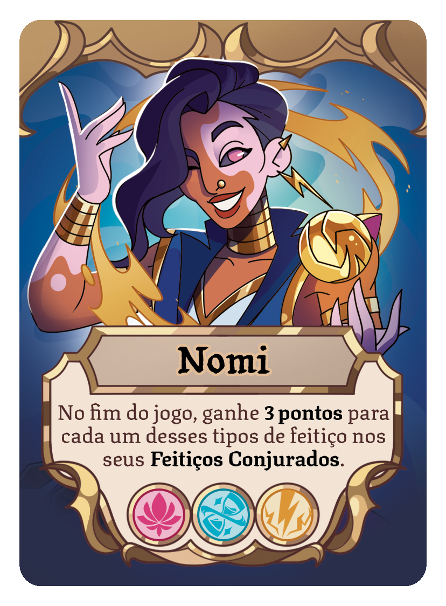
Rebelde Cativante
Décadas encantando nas ruas próximas ao Arcanium transformaram Nomi em um Caster do povo. Embora a maioria conheça sua exuberância e coração caloroso, os egoístas e gananciosos aprenderam a temer o relâmpago que brilha por trás de seus olhos.
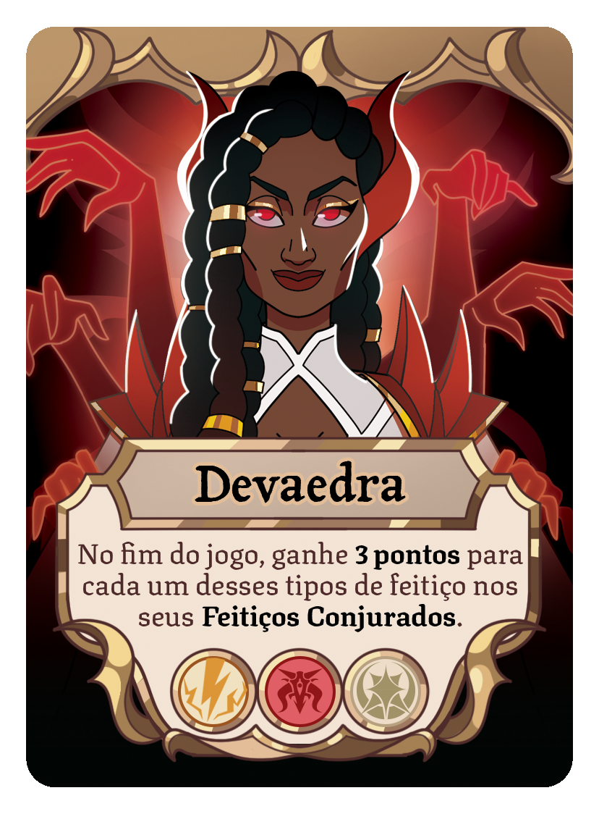
Fanática Demoníaca
Como serva devota do Panteão, Devaedra atraiu um misterioso mentor que cultivou seus poderes arcanos e lhe concedeu grande influência. Mas, após abusar desse dom, acabou expulsa da ordem sagrada. Agora, entra na arena em busca de vingança e do poder que um dia lhe pertenceu.
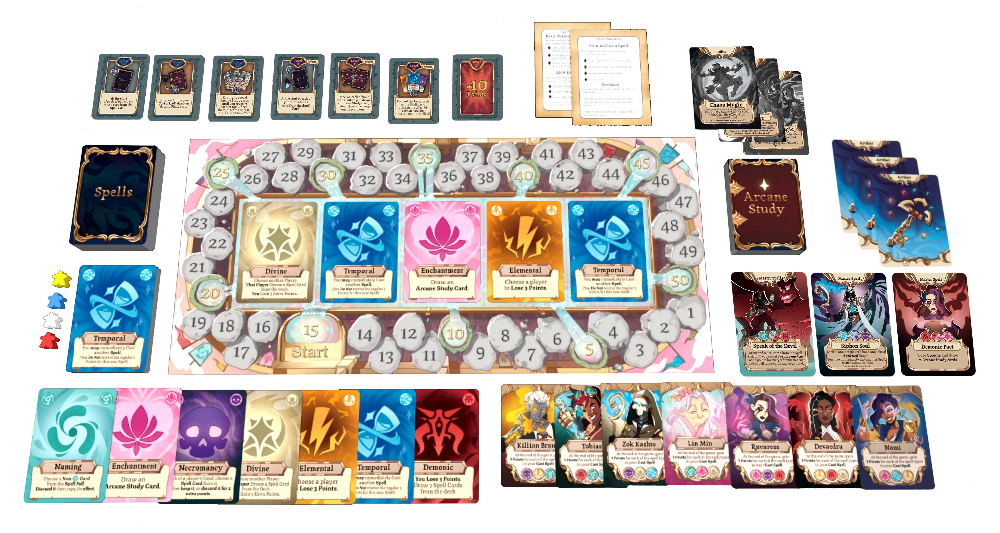
A Not Corrupt Games nasceu de um grupo de amigos que se conheceram na indústria de videogames. Cansados das telas, decidimos trazer nossa paixão por criação de mundos e mecânicas de jogo para experiências presenciais de mesa, com jogos que promovem conexões reais por meio da competição amigável. Somos pessoas de verdade, que querem criar coisas incríveis junto de criadores que admiramos. Venha jogar com a gente!
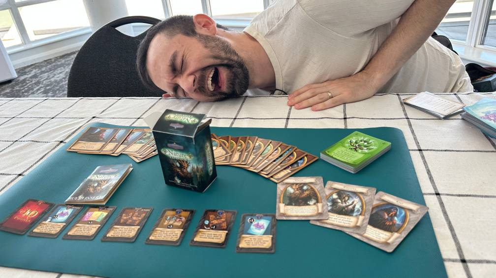
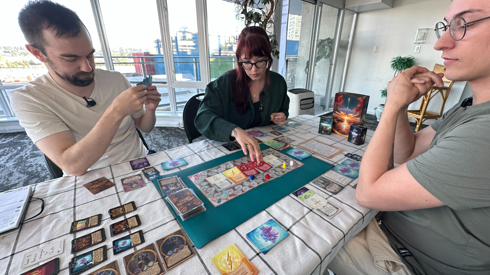
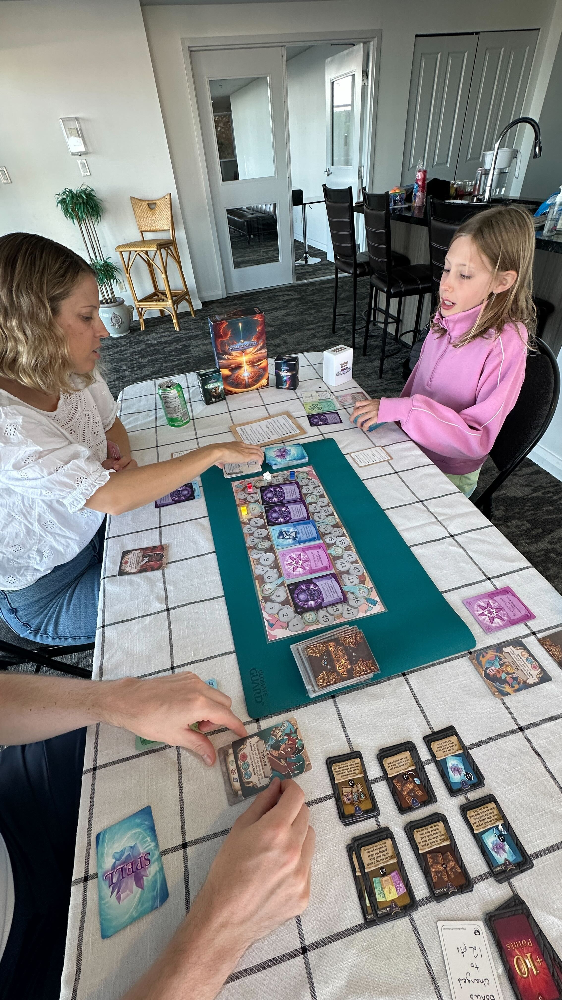